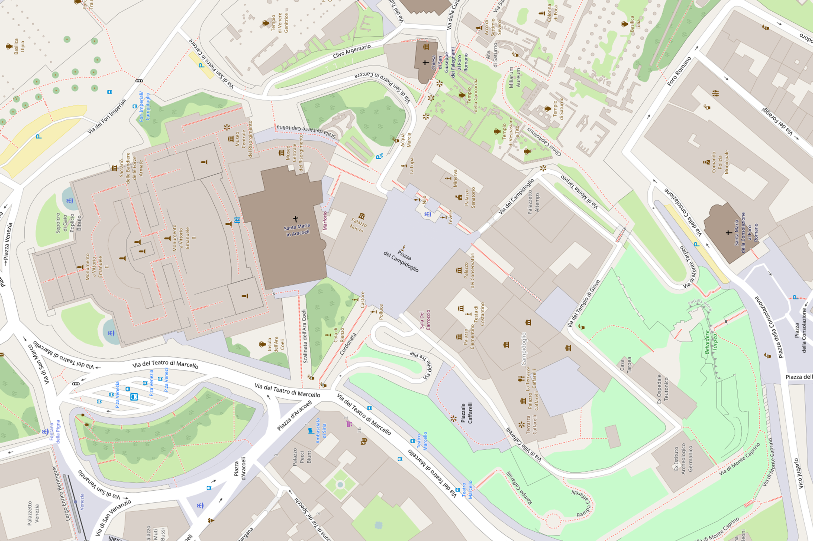
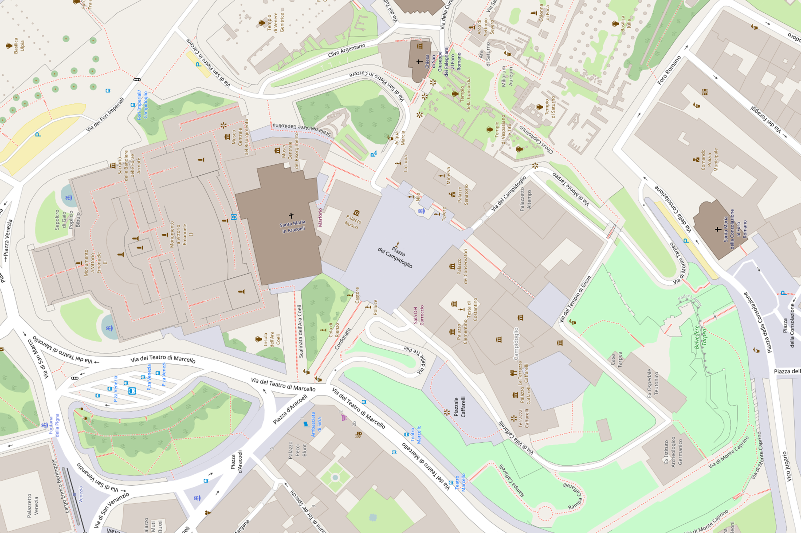
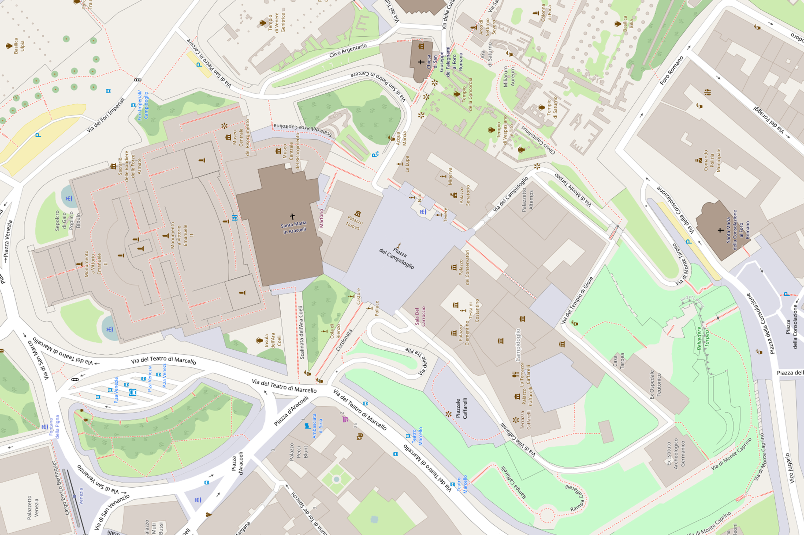

MICHELANGELO'S CAMPIDOGLIO
About Project
Bibliography
Menu
Introduction
Interactive Map
Change Basemap
Forma Urbis Plates (Lanciani)
Ancient Hill (Platner)
Open Street Maps
Google Earth
Google Earth (Enhanced)


 
